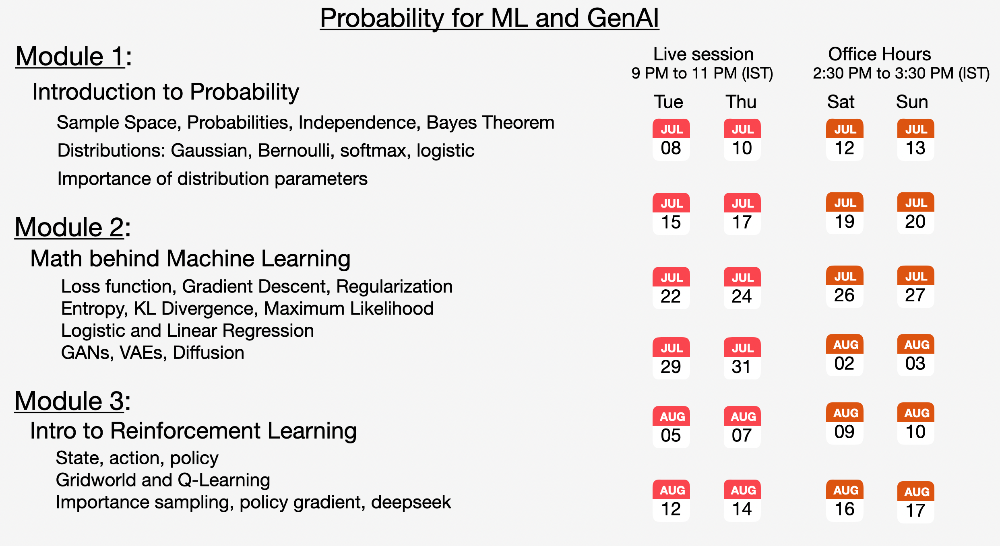

Intro to GANs#
This code implements a 2D Generative Adversarial Network that learns to generate points on a unit circle.
Generator Network#
class Generator(nn.Module):
def __init__(self):
super().__init__()
self.net = nn.Sequential(
nn.Linear(2, 64), nn.ReLU(),
nn.Linear(64, 64), nn.ReLU(),
nn.Linear(64, 64), nn.ReLU(),
nn.Linear(64, 2)
)
def forward(self, z):
return self.net(z)
The generator is a 4-layer neural network that transforms 2D random noise into realistic-looking 2D points. It takes random input z from a normal distribution and outputs (x,y) coordinates that should mimic the real data distribution.
Discriminator Network#
class Discriminator(nn.Module):
def __init__(self):
super().__init__()
self.net = nn.Sequential(
nn.Linear(2, 64), nn.ReLU(),
nn.Linear(64, 64), nn.ReLU(),
nn.Linear(64, 64), nn.ReLU(),
nn.Linear(64, 1), nn.Sigmoid()
)
def forward(self, x):
return self.net(x)
Join the upcoming live cohort where we explain these concepts in great detail:
The discriminator is also a 4-layer network but outputs a single probability value between 0 and 1. Its job is to distinguish real data (should output ~1) from fake generated data (should output ~0). The Sigmoid activation ensures the output stays in the 0-1 range.
GAN Class Setup#
class GAN:
def __init__(self):
self.G = Generator()
self.D = Discriminator()
self.g_opt = optim.Adam(self.G.parameters(), lr=0.001)
self.d_opt = optim.Adam(self.D.parameters(), lr=0.001)
self.criterion = nn.BCELoss()
This creates instances of both networks with separate Adam optimizers (learning rate 0.001) and Binary Cross Entropy loss. Having separate optimizers is crucial because the two networks have opposing objectives.
Real Data Generation#
def real_data(self, n):
theta = torch.rand(n) * 2 * np.pi
return torch.stack([torch.cos(theta), torch.sin(theta)], dim=1)
Generates the “ground truth” data that the generator should learn to mimic. Creates n points perfectly distributed on a unit circle by:
Sampling random angles between 0 and 2π
Converting to (x,y) coordinates using cos and sin functions
Training Process#
def train_step(self, batch_size=256):
real = self.real_data(batch_size)
z = torch.randn(batch_size, 2)
fake = self.G(z)
# Train Discriminator
d_real = self.D(real)
d_fake = self.D(fake.detach())
d_loss = self.criterion(d_real, torch.ones_like(d_real)) + \
self.criterion(d_fake, torch.zeros_like(d_fake))
self.d_opt.zero_grad()
d_loss.backward()
self.d_opt.step()
# Train Generator
d_fake = self.D(fake)
g_loss = self.criterion(d_fake, torch.ones_like(d_fake))
self.g_opt.zero_grad()
g_loss.backward()
self.g_opt.step()
return g_loss.item(), d_loss.item()
The training happens in two phases:
Discriminator Training: The discriminator learns to correctly identify real vs fake data. It’s penalized when it mistakes real data for fake (should output 1) or fake data for real (should output 0). The .detach() prevents gradients from flowing back to the generator.
Generator Training: The generator tries to fool the discriminator by making fake data that the discriminator thinks is real. Its loss increases when the discriminator correctly identifies its output as fake.
Join the upcoming live cohort where we explain these concepts in great detail:
Visualization Code#
def plot_results(self):
with torch.no_grad():
z = torch.randn(1000, 2)
fake = self.G(z).numpy()
real = self.real_data(1000).numpy()
# Create decision boundary visualization
x = np.linspace(-4, 4, 100)
y = np.linspace(-4, 4, 100)
X, Y = np.meshgrid(x, y)
grid = torch.tensor(np.c_[X.ravel(), Y.ravel()], dtype=torch.float32)
Z = self.D(grid).reshape(X.shape).numpy()
plt.figure(figsize=(10, 5))
plt.subplot(1, 2, 1)
plt.contour(X, Y, Z, levels=[0.5], colors='white', linewidths=2)
plt.contourf(X, Y, Z, levels=50, alpha=0.3, cmap='RdBu')
plt.scatter(fake[:, 0], fake[:, 1], c='yellow', s=20, alpha=0.7, label='Generated')
plt.scatter(real[:, 0], real[:, 1], c='cyan', s=20, alpha=0.7, label='Real')
plt.title('GAN Results with Decision Boundary')
plt.legend()
plt.grid(True, alpha=0.3)
plt.subplot(1, 2, 2)
plt.scatter(z[:500, 0].numpy(), z[:500, 1].numpy(), c='red', s=20, alpha=0.7)
plt.title('Latent Space Z ~ N(0,1)')
plt.grid(True, alpha=0.3)
plt.tight_layout()
plt.show()
Creates two side-by-side plots to visualize the training results:
Left Plot: Shows the main results with generated points (yellow) vs real points (cyan). The colored background represents the discriminator’s confidence, and the white contour line shows the decision boundary where the discriminator is 50% confident.
Right Plot: Shows the input noise distribution (red dots) sampled from a normal distribution. This demonstrates how the generator transforms simple random noise into structured circle patterns.
Key Concept#
This is a minimax game where two networks compete: the generator tries to create fake data so good that the discriminator can’t tell it’s fake, while the discriminator tries to get better at spotting fakes. When training succeeds, the generator learns to perfectly mimic the real data distribution.
Join the upcoming live cohort where we explain these concepts in great detail:
📅 CALENDAR
